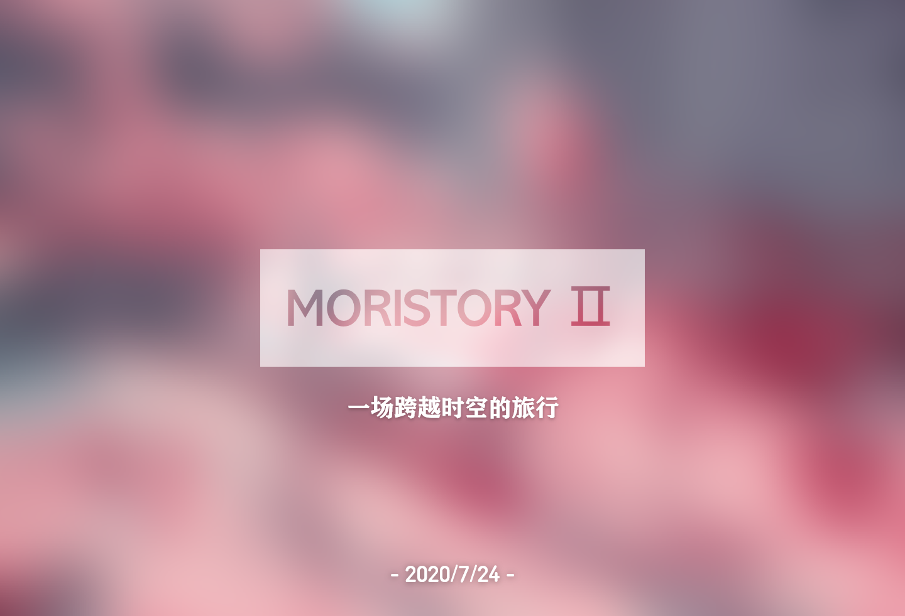

主页
友联
Github
QQ
Moristory II 游戏构建中!
Buger404 の 老窝
专业BUG设计师
Github

2020年7月24日
Moristory2 - 一场跨越时空的旅行
C#, Unity
持续填坑中
Experiments - 我的垃圾实验项目
vb6, c++, c#
参与比赛中
Emerald - UI/游戏框架
vb6, GDI, GDI+, bass
已弃坑
Intallk - 黑嘴智能扰民机器人专业加强版
C#, CoolQ
在Github上查看所有repo